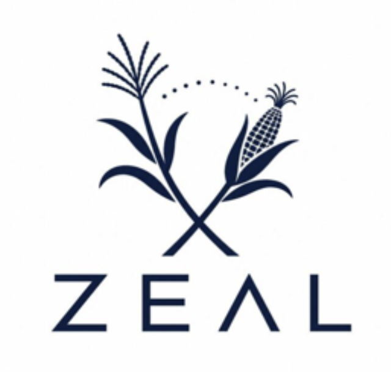

zealhmm
Teosinte-introgression QTL recovery under low-coverage genotyping
Analysis notebooks grouped by dataset, and within each dataset by the paper the work supports. Two papers are being written here — the nilHMM R package paper (priority) and the ZEAL population paper — plus the Inv4m paper (already written, in review), which this repo supplies updated genotypes to.
nilHMM methods
§1 Foundations — missing data
The Poisson and exponential-with-floor model of missing data, fit to the BZea population.
| Notebook | Description |
|---|---|
| Coverage theory | Poisson coverage model — the missing-data baseline |
| Floor model | Exponential-with-floor missingness, fit to BZea BAM alignments |
| Model comparison | Floor model across WGS, Wideseq, and SNP50K datasets |
| Ergodicity assumption | Scale-invariance of missing(λ) — the per-sample coverage model transfers to the per-bin scale |
§1 Foundations — genotype calling
Single-read genotype likelihoods and the prior’s role in low-coverage calling, the depth-driven emission choice, and why the SNP50K skim cannot resolve zygosity.
| Notebook | Description |
|---|---|
| Genotype likelihoods | GL → posterior → call; where the prior lives; what accumulation can and cannot do |
| Resolving dosage | Why SNP50K skim can’t resolve het/hom dosage — rare-allele prior + outbred-donor dilution |
| Emission by depth | When read counts earn their keep vs a hard genotype |
Engine & calibration
The shared HMM engine and its simcross calibration — common to every dataset below.
| Notebook | Description |
|---|---|
| Single-locus validation | Does the simcross BC2S3 simulator reproduce the breeding-scheme genotype frequencies? (native v5 map) |
| Ancestry callers | nNIL, RTIGER, LB-Impute, binhmm, control |
| Simulation calibration | Two-stage simcross parameter search (calibrate on sim, validate on truth) |
| GWAS-landscape geometry | Framework: rank ancestry callers by the spatial coherence (autocorrelation / band-limited noise) of the GWAS profile |
TeoNAM
W22 × 5 teosinte inbreds; 1,257 BC1S4 RILs (Chen 2019).
nilHMM R package paper
Coverage-degradation reproduction — the results core
Reproduce Chen 2019 on real genotypes, then degrade coverage and re-call ancestry with each caller: the GWAS-profile-under-simulated-coverage comparison.
| Notebook | Description |
|---|---|
| STAM · GWAS + coverage sweep (native) | STAM Manhattan (Chen Fig 4C) on real genotypes + coverage sweep, native map |
| STAM · GWAS + coverage sweep (118K) | Same, on the authentic 118,838-SNP Chen 2019 panel |
| STAM · MLM five-caller sweep (118K) | STAM MLM (Family + K), five-caller coverage-degradation sweep |
| DTA · MLM five-caller sweep (118K) | DTA MLM (Family + K) sweep + noisiness — robustness on a 2nd trait |
Fig-4C model reproduction
Chen’s actual Fig-4C mixed model (Q = 5 PCs + K = Centered-IBS, P3D).
| Notebook | Description |
|---|---|
| STAM · MLM (Q + K), 118K | Chen’s exact Fig-4C model (5 PCs + Centered-IBS K, P3D) on the authentic 118K + QQ/λ |
| STAM · MLM (Q + K), interpolated | Same model on the interpolated map panel; OLS → MLM inflation comparison |
Calibration, map & marker framework
| Notebook | Description |
|---|---|
| Caller calibration | Per-coverage caller parameters (rigidity/rrate/recombdist) by min-FDR on simulated truth |
| Genetic map | Native v5 R/qtl composite genetic map |
| Marker thinning | cM thinning as a Max Distance-d Independent Set |
Supplementary — OLS computation & QC
The per-marker OLS computation behind the scans, reproducible from primary data.
| Notebook | Description |
|---|---|
| STAM · OLS computation (118K) | Per-marker across-family OLS on the 118K panel — computation, model & QC |
| STAM · OLS computation (family-imputed) | Per-marker OLS on the FSFHap family-imputed panel — computation & QC |
ZEAL / BZea

Zea Exotic Allele Library
B73 × teosinte BC2S3 near-isogenic lines; SNP50K panel at ~0.4× skim.
nilHMM R package paper
The ZEAL data used as method demonstration — caller agreement, ancestry painting across sources, and the paired skim + BRB-seq cross-modality comparison.
| Notebook | Description |
|---|---|
| RTIGER vs nilHMM | Ancestry-call agreement between callers |
| nilHMM painting | Ancestry-painting sanity check |
| Source/method comparison | Genotype-source and method comparisons |
ZEAL population paper
Trait QTL recovery on the ZEAL/BZea population (a reflection of the TeoNAM analysis): JLM + MLM composites with five-caller comparison, at 1000-perm FWER.
| Notebook | Description |
|---|---|
| DTA · MLM + JLM | DTA: JLM + MLM composite, five-caller comparison |
| DTA · 1000-perm FWER | DTA: same, 1000-perm FWER |
| PH · 1000-perm FWER | Plant height: JLM + MLM composite, five-caller comparison, dwarf/GA candidates, 1000-perm FWER |
| EH · 1000-perm FWER | Ear height: per-field SpATS BLUE; JLM + MLM composite, five-caller comparison, dwarf/GA/BR height candidates (Peiffer 2014), 1000-perm FWER |
| EN · 1000-perm FWER | Ear number: per-field SpATS BLUE; JLM + MLM composite, five-caller comparison, ear-number / prolificacy candidates (core gt1/tb1/tru1 + inflorescence-architecture genes), 1000-perm FWER |
| Prolif · 1000-perm FWER | Prolificacy (>1 ear): per-field SpATS BLUE; JLM + MLM composite, five-caller comparison, shares the ear-number / prolificacy candidate panel (gt1=prol1.1, tb1, tru1 + branching/meristem genes), 1000-perm FWER |
| NBR · 1000-perm FWER | Brace-root number (shoot-borne nodal roots): per-field SpATS BLUE; JLM + MLM composite, five-caller comparison, curated brace-root candidate panel (auxin/ARF/AP2 regulators rtcs1/ZmARF11/ZmRAP2.7 + shoot-borne-root initiation + lateral-root modifiers), 1000-perm FWER |
| LAE · 1000-perm FWER | Leaves above ear (leaf/node number, CLY25): per-field SpATS BLUE; JLM + MLM composite, five-caller comparison, TU1-centric leaf-number candidate panel (tu1/tunicate1 ZMM19 upstream + its plastochron/meristem targets), 1000-perm FWER |
| SPAD · spatial BLUE · 1000-perm FWER | Leaf greenness (SPAD/chlorophyll): single spatially-corrected SpATS BLUE from the CLY25 fieldbook SPAD column; 18-gene chlorophyll panel; JLM + MLM, five-caller comparison, 1000-perm FWER |
| SPAD 20DAS · as-is · 1000-perm FWER | SPAD greenness at 20 days after sowing; zealbrowser (Bzea_merged) value used as-is, per-line, no spatial correction; same chlorophyll panel, 1000-perm FWER |
| SPAD 36DAS · as-is · 1000-perm FWER | SPAD greenness at 36 days after sowing; zealbrowser (Bzea_merged) value used as-is, per-line, no spatial correction; same chlorophyll panel, 1000-perm FWER |
| DTS · 1000-perm FWER | Days to silk (flowering): JLM + MLM composite, five-caller comparison, flowering candidates, 1000-perm FWER |
| StPi · 1000-perm FWER | Stem pigment (anthocyanin): binary 0–1 score modeled as empirical logit (no spatial correction); JLM + MLM composite, five-caller comparison, anthocyanin-pathway candidates, 1000-perm FWER |
| StPu · 1000-perm FWER | Stem pubescence (macrohairs): binary 0–1 score modeled as empirical logit (no spatial correction); JLM + MLM composite, five-caller comparison, mhl1/inv9f + trichome candidates, prior qMH overlay, 1000-perm FWER |
| Kinki · 1000-perm FWER | Kinki (zigzag culm; Eyster 1920): CLY23-only ordinal severity binarized and modeled as empirical logit (no spatial correction); JLM + MLM composite, five-caller comparison, culm/meristem-architecture candidates anchored on gn1/knox4 + classical zg1 interval, 1000-perm FWER |
R/qtl (linkage-mapping) route
The classic linkage-mapping contrast to the MLM/JLM GWAS above: R/qtl (bcsft) interval mapping by Haley–Knott on the RTIGER ancestry mosaic projected onto the TeoNAM JLM 0.1-cM grid, with multi-peak deconvolution and per-family scans. All traits are scanned in one joint run (scripts/zeal_rqtl_scan.R) sharing a single 1000-permutation null, then each notebook reads its per-trait results.
| Notebook | Description |
|---|---|
| DTA · R/qtl | Days to anthesis: classic R/qtl (bcsft) interval mapping (Haley–Knott) on the RTIGER mosaic projected onto the TeoNAM JLM grid; LOD profile + airmine multi-peak refinement + per-family scans; flowering candidate panel (ZmCCT10/9, zcn8/12, dlf1, tu1) — recovers ZmCCT10 on chr10 |
| DTS · R/qtl | Days to silk: same R/qtl pipeline; flowering candidate panel; chr10 support interval spans ZmCCT10 |
| PH · R/qtl | Plant height: R/qtl LOD profile + multi-peak + per-family scans; dwarf/GA/BR height candidate panel |
| EH · R/qtl | Ear height: R/qtl LOD profile + per-family scans; dwarf/GA/BR height candidate panel |
| EN · R/qtl | Ear number: R/qtl LOD profile + per-family scans; ear-number / prolificacy candidate panel (gt1/tb1/tru1 + inflorescence architecture) |
| Prolif · R/qtl | Prolificacy (>1 ear): R/qtl LOD profile + per-family scans; shares the ear-number / prolificacy candidate panel |
| NBR · R/qtl | Brace-root number: R/qtl LOD profile + per-family scans; brace-root candidate panel |
| LAE · R/qtl | Leaves above ear: R/qtl LOD profile + per-family scans; TU1-centric leaf-number candidate panel (tu1/tunicate1 + plastochron/meristem targets) |
| SPAD · R/qtl | Leaf greenness (SPAD): R/qtl LOD profile + per-family scans; chlorophyll candidate panel |
Inv4m paper (in review)
Updated-genotype support for the Inv4m inversion–flowering paper.
| Notebook | Description |
|---|---|
| Inv4m genotype · 50K vs 200K | Genotype at the Inv4m tagging SNP (PZE04175660223) from the 200K (previous, Nirwan) and 50K (current, Fausto) RTIGER call sets: confusion matrix, BC2S3 goodness-of-fit, and the flowering-time LMM on each |